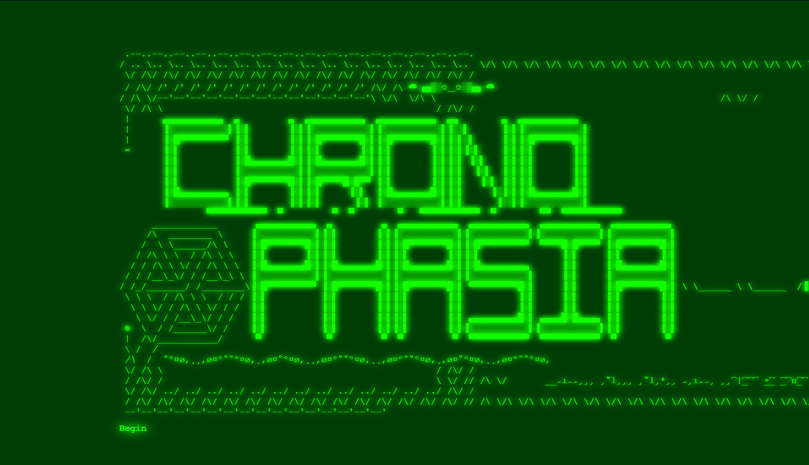
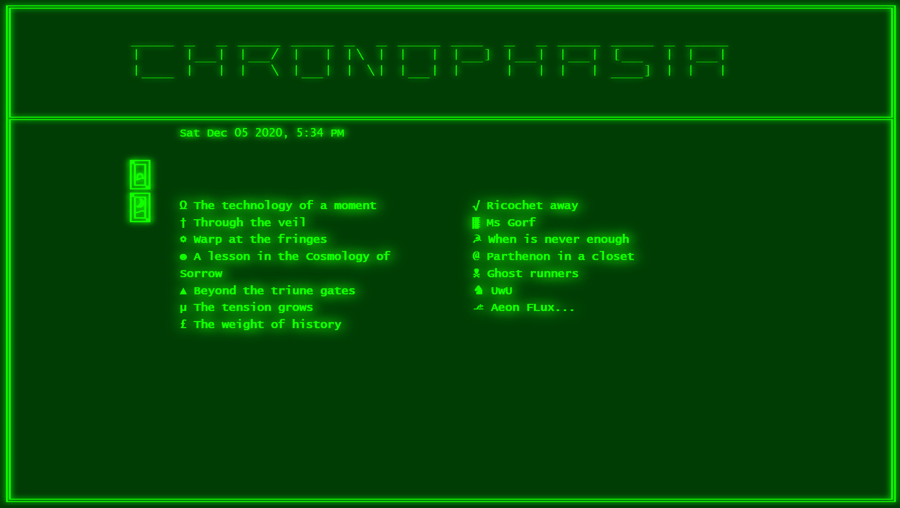
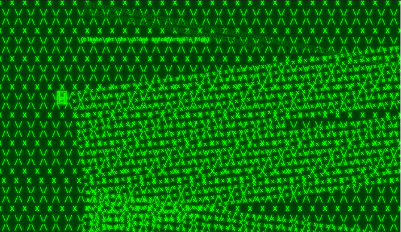

Chronophasia
Chronophasia is a correspondence with oneself through time. Within an archaic terminal
strange text vignettes play out, ruminating on cataclysm, aging, and the horrible and
beautiful ways we spend our time. A poetic love note to Chrono Trigger and Aeon Flux.
A hypertext game playable in-browser at
itch.io
Produced for the online exhibition
is this just fantasy?


